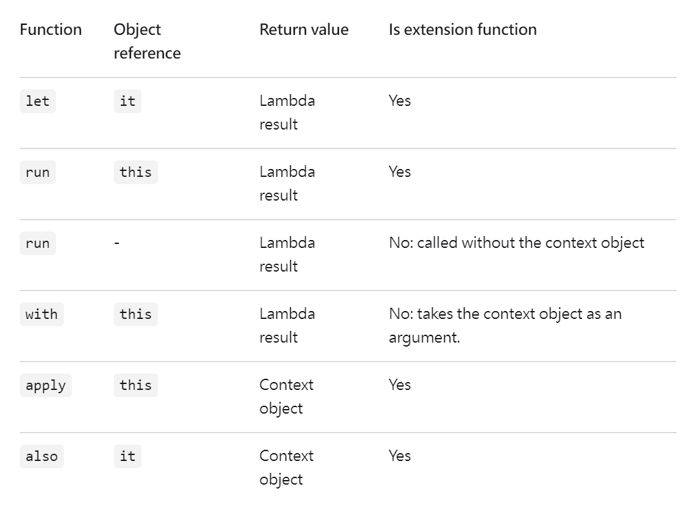

Kotlin
Introduction
Jack Lo

Outline
- What is Kotlin
- Interop with Java
- Basic Features
- Data Class & Sealed Class
- Function in Kotlin
- Constant
- Generics
- Recap
Kotlin Bootcamp
What is Kotlin
- Statically Typed
- Cross-platform
- JVM
- Binary without VM ➡️ Kotlin/Native
Interop with Java
- Can use all the Java Libraries in Kotlin
- Convert Java code/file to Kotlin with IntelliJ
🔍 Some implementations are different
Java vs. Kotlin vs. Apache StringUtils
import org.apache.commons.lang3.StringUtils
fun main() {
val str = "A / B C /"
println((str as java.lang.String).split(" /").contentDeepToString())
// ["A", " B C"] : String[]
println((str as kotlin.String).split(" /"))
// ["A", " B C", ""] : List<String>
println((str as kotlin.String).split(" /".toRegex()))
// ["A", " B C", ""] : List<String>
println(StringUtils.split(str, " /").contentDeepToString())
// ["A", "B", "C"] : String[]
println(StringUtils.splitByWholeSeparator(str, " /").contentDeepToString())
// ["A", " B C", ""] : String[]
}
Basic Features
- NO semicolon
- Variables ➡️
val&var
fun main() {
var a = 5
a = 3 // OK
val b = 5
b = 3 // Compile failed: Val cannot be reassigned
}
Null Safty
- Nullable types ➡️
T? - Non-null types
- Not-null assertion operator ➡️
!!- converts any value to a non-null type and throws an exception if the value is
null
- converts any value to a non-null type and throws an exception if the value is
fun main() {
val a: Int? = null // OK
val b: Int = null // Compile failed: Null can not be a value of a non-null type Int
val c: Int? = 5
c.toDouble() // Compile failed: Only safe (?.) or non-null asserted (!!.) calls are allowed on a nullable receiver of type Int?
c!!.toDouble() // OK
}
Elvis Operator
fun main() {
val nonNullString: String? = "Non-null String"
val nullValue: String? = null
val nonNullString2: String = "Non-null String 2"
val result1 = nonNullString ?: nonNullString2
println(result1) // "Non-null String"
val result2 = nullValue ?: nonNullString2
println(result2) // "Non-null String 2"
}
There is NO Ternary Operator in Kotlin
➡️ use if-else instead
fun main() {
val isMember = true
val fee = if (isMember) 20 else 100 // equals to `isMember? 20:100` in Java
println(fee) // 20
}
Type Inference & Smart Cast
fun main() {
val x = "This is a String." // `x` is inferred to `String`
val y: Any = "This is another String with Any type."
if (y is String) {
println(y.length) // `y` is automatically cast to `String`
}
}
String Format
fun main() {
val x = 5
println("$x") // 5
val y = "Hello!"
println("${y.length}") // 6
val z = 5.125
println("%.2f".format(z)) // 5.13
}
Data Class & Sealed Class
Data Class
- Getters and Setters
hashCode()andequals()toString()
data class User (
var id: Int = 0,
var name: String = ""
)
fun main() {
val user = User()
// setter
user.id = 123
user.name = "Tom"
// getter & toString()
println("${user.id} / ${user.name}") // "123 / Tom"
}
Sealed Class
🔍 Represent restricted class hierarchies
sealed class Expr {
data class Const(val number: Double) : Expr()
data class Sum(val e1: Expr, val e2: Expr) : Expr()
object NotANumber : Expr()
}
fun eval(expr: Expr): Double = when(expr) {
is Expr.Const -> expr.number
is Expr.Sum -> eval(expr.e1) + eval(expr.e2)
Expr.NotANumber -> Double.NaN
// the `else` clause is not required because we've covered all the cases
}
fun main() {
val expr = Expr.Sum(Expr.Const(5.0), Expr.Const(10.5))
println(eval(expr)) // 15.5
}
Function in Kotlin
- Default value of function argument
fun square(num: Int = 5): Int {
return num * num
}
fun main() {
println(square(10)) // 100
println(square()) // 25
}
Single Expression Function
//fun square(num: Int = 5): Int {
// return num * num
//}
fun square(num: Int = 5): Int = num * num
Scope Function
🔍 When you call such a function on an object with a lambda expression provided, it forms a temporary scope.

Try to run this !
fun testLet(str: String) =
str.let {
println(it)
"World!"
}.let {
println(it)
}
fun testRun(str: String) =
run {
println(str)
"Hello AGAIN!"
}.run {
println(this)
"World!"
}.let {
println(it)
}
fun testWith(str: String) =
with(str) {
println(this)
"World!"
}.let {
println(it)
}
fun testAlso(str: String) =
str.also {
println(it)
"World!" // The expression is unused
}.let {
println(it)
}
fun testApply(str: String) =
str.apply {
println(this)
"World!" // The expression is unused
}.let {
println(it)
}
fun main() {
val str = "Hello!"
println("--- let ---")
testLet(str)
println("--- run ---")
testRun(str)
println("--- with ---")
testWith(str)
println("--- also ---")
testAlso(str)
println("--- apply ---")
testApply(str)
}
map & filter
🔍 We will do a little refactor this example later
fun main() {
val numbers = mutableListOf("one", "two", "three", "four", "five")
val filteredNumbers = numbers.map {
it.length // [3, 3, 5, 4, 4]
}.filter {
it > 3 // the element will remain only if it > 3
}
println(filteredNumbers) // [5, 4, 4]
}
Lambda Function
//fun square(num: Int): Int {
// return num * num
//}
val square: (Int) -> Int = { num -> num * num }
// Note: Lambda expressions cannot have default parameters
Function Reference
➡️ a part of Reflection
- Use
::to convert a function to lambda - Then as a function type value, it can be passed to another function
fun square(num: Int): Int {
return num * num
}
// `::square` equals to
// val square: (Int) -> Int = { num -> num * num }
fun opThenAddAnotherNum(num1: Int, num2: Int, op: (Int) -> Int): Int {
return num1 + op(num2)
}
fun main() {
println(square(5)) // 25
println(::square) // function square (Int) -> Int
println((::square)(5)) // 25
println(opThenAddAnotherNum(10, 5, ::square)) // 10 + 5 * 5 = 35
println(opThenAddAnotherNum(10, 5) { it * it }) // 10 + 5 * 5 = 35
}
Class Reference
🔍 On JVM: a Kotlin class (KClass) reference is not the same as a Java class reference.
fun main() {
val str = "Hello!"
println(str::class) // class java.lang.String (Kotlin reflection is not available)
println(str::class.java) // class java.lang.String
println(str is String) // true
}
Back to the numbers filtering example
➡️ more simple and clear about what to do
fun main() {
val numbers = mutableListOf("one", "two", "three", "four", "five")
numbers.map { it.length }.filter { it > 3 }.let (::println) // [5, 4, 4]
}
🔍 In Kotlin, almost everything is an expression and has a value
fun main() {
val x = print("Hello!") // x: Unit
}
🔍 In Kotlin, function is first class citizen
➡️ We can pass them, return them, assign them, …
➡️ Functional Programming!
Constant
const val➡️ cannot be changed and determined at compile timeobject➡️ singletoncompanion object➡️ can be used like static member in Java
object MyUtility {
const val hello = "Hello!"
fun round(num: Double, decimal: Int): Double = "%.${decimal}f".format(num).toDouble()
}
class MyClass {
companion object {
const val world = "World!"
fun square(num: Int): Int = num * num
}
fun sum(a: Int, b: Int): Int = a + b
}
fun main() {
println(MyUtility.hello) // "Hello!"
println(MyUtility.round(5.125, 2)) // 5.13
println(MyClass.world) // "World!"
println(MyClass.square(5)) // 25
val myClass = MyClass()
println(myClass.sum(5, 10)) // 15
}
Generics in & out
outtype ➡️ can only be returned from a classintype ➡️ can only be passed into a class
🔍 make sure that only safe types are passed in and out of functions
out ➡️ Covariant
interface Foo<out T> {
fun bar(): T
}
fun fooBar(strFoo: Foo<String>) {
val anyFoo: Foo<Any> = strFoo // OK! `String` extends `Any`
}
in ➡️ Contravariant
interface Foo<in T> {
fun bar(t: T)
}
fun fooBar(anyFoo: Foo<Any>) {
val str: String = "Hello!"
anyFoo.bar(str) // OK! `String` extends `Any`
}
https://fantasy1022.medium.com/kotlin-中的-in-and-out-2ece7c86c8d6
Recap
- Interop with Java
- Null Safety
data class&sealed class- Function in Kotlin is first class citizen
- Constant ➡️
object&companion object - Generics ➡️
in&out
And More …
- Coroutines ➡️ Asynchronous & Concurrency
- Functional Programming